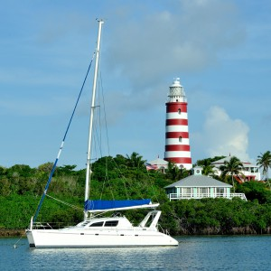
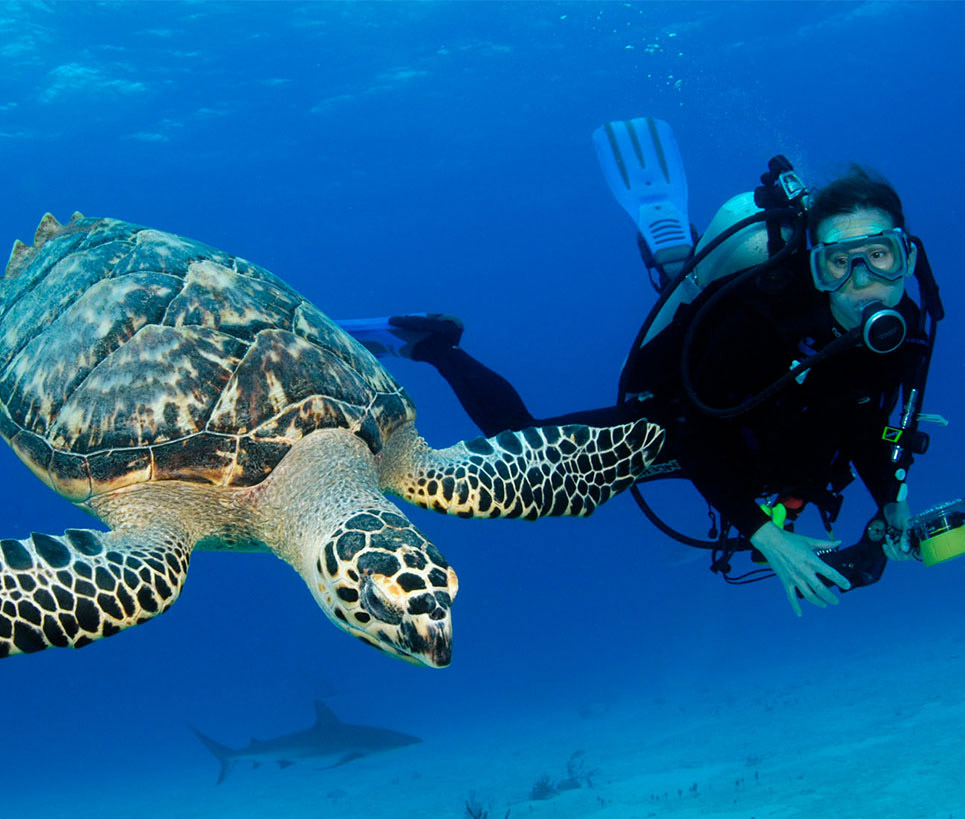
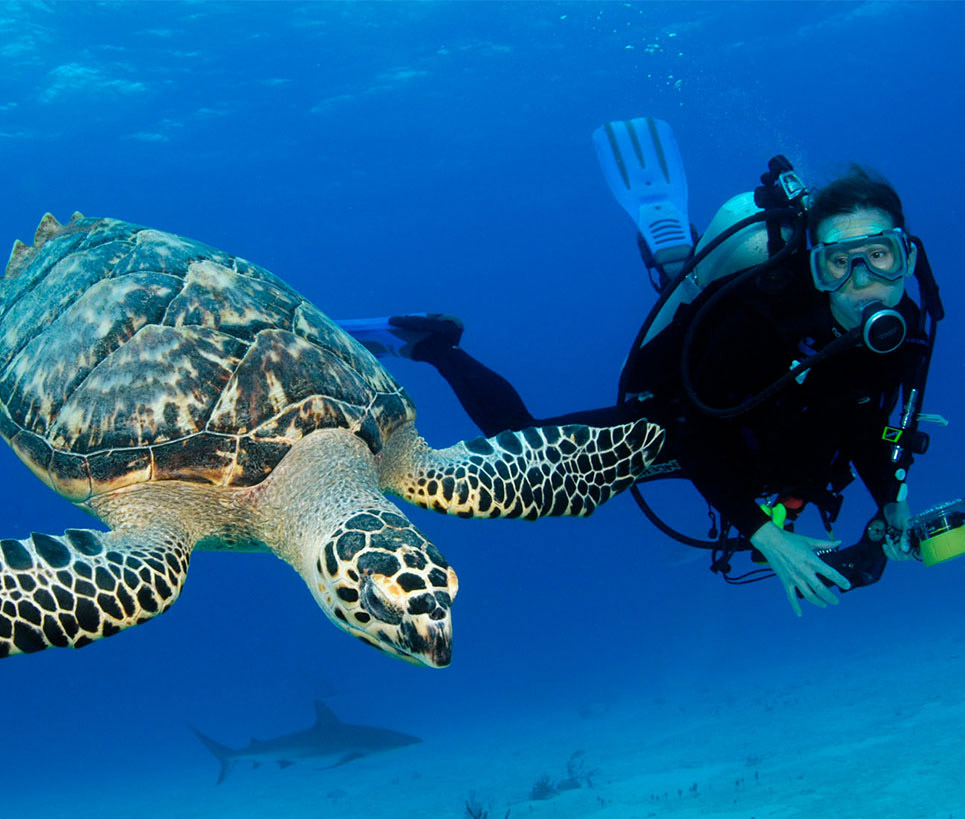

Partir en voyage aux Bahamas, c’est entrer dans la carte postale : des plages paradisiaques qui sont souvent citées comme les plus belles du monde, entre sable blanc et eau turquoise, un océan rempli de tortues et de poissons multicolores, des villages multicolores où prospère une culture métissée et chaleureuse. Ce n’est pas un hasard si la série de films Pirates des Caraïbes a été tournée en grande partie aux Bahamas, car les décors naturels sont dignes d’Hollywood. Mais quelle destination choisir dans un archipel qui compte pas moins de sept-cents îles et îlots ? Rencontrer la faune sauvage, buller sur les plus belles plages, remonter le temps dans le quartier colonial, découvrir des curiosités géologiques exceptionnelles… les différentes îles des Bahamas s’accordent à toutes les envies. Un voyage de rêve?
Par la beauté idyllique des paysages et l’accueil chaleureux que les habitants réservent aux voyageurs, les Bahamas le font devenir réalité.

LA CAPITALE NAUTIQUE DES BAHAMAS
Le sous-archipel des Abacos et ses 120 petites îles et îlots appelés les « cays », vous invitent à découvrir leurs trésors bien gardés aux cours de votre visite des Bahamas. Entre les villages au décor de carte postale et leurs petites maisons colorées, la nature grandiose sur terre comme dans les profondeurs sous-marines et les magnifiques étendues de sable blanc, vos vacances aux Abacos s’annoncent inoubliables !
La chaîne d'îles des Abacos est un véritable paradis pour la navigation de plaisance et la pêche. Ceux qui préfèrent l'exploration terrestre y trouveront de charmants villages coloniaux, des parcours de golf de renommée mondiale et de nombreux hôtels, restaurants et bars.


À bord d’un kayak, on se fondra en silence dans l’incroyable réseau de palétuviers, où les jeunes requins et tortues marines ont leur « nurserie » entre les racines. Une vraie immersion au cœur d’une nature sauvage et préservée !
Ceux qui veulent approfondir leurs connaissances iront ensuite découvrir les nombreux musées de Nassau dans le vieux cœur colonial, pour s’immerger dans l’histoire mouvementée et la culture chatoyante de cet archipel métissé.
Les Abacos

PLONGER AU COEUR DU TURQUOISE
Parce que les Bahamas sont des bancs de sable blanc affleurant au cœur de l’océan, les eaux sont d’une clarté exceptionnelle, et la destination est mondialement réputée pour la qualité de ses sites de plongée et snorkeling. Chacune des îles a son « spot » célèbre, mais on pourra citer Current Cut à Eleuthera pour les plongeurs, exceptionnel rif corallien regorgeant de tortues et de requins, ou encore Thunderball Grotto à Exuma pour le snorkeling. Cette grotte rendue célèbre par James Bond est un aquarium géant où on évolue au milieu de dizaines de poissons multicolores. N’oubliez pas les célèbres « trous bleus », spectaculaires curiosités géologiques où l’effondrement du plancher océanique crée un cercle sombre au milieu de l’océan.
PAGAYEZ AU MILIEU DES MANGROVES
Parmi les 32 parcs nationaux des Bahamas, plusieurs sont des mangroves, écosystèmes très riches en biodiversité et qui se découvrent idéalement à la rame. C’est par exemple le cas du parc Bonefish Pond, à deux pas de Nassau, ou encore du Lucayan Park à Grand Bahama.À bord d’un kayak, on se fondra en silence dans l’incroyable réseau de palétuviers, où les jeunes requins et tortues marines ont leur « nurserie » entre les racines. Une vraie immersion au cœur d’une nature sauvage et préservée !
Goûter les saveurs des Bahamas à Nassau
Pour un mélange de culture et gastronomie, plusieurs compagnies de Nassau proposent des tours guidés du cœur de ville mêlant visites et dégustations. On déambulera de petit resto local en bar authentique pour découvrir la salade de conch, les macaronis, la soupe de coquillages, le cocktail Bahama Mama ou encore le chocolat 100 % bahaméen. Et entre deux délices, on découvrira l’histoire des Bahamas, entre grandes découvertes, pirates et combat pour l’émancipation des esclaves.Ceux qui veulent approfondir leurs connaissances iront ensuite découvrir les nombreux musées de Nassau dans le vieux cœur colonial, pour s’immerger dans l’histoire mouvementée et la culture chatoyante de cet archipel métissé.